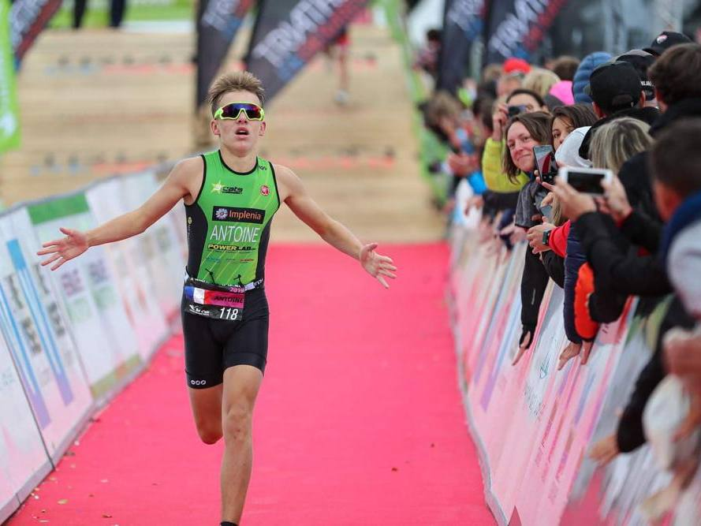
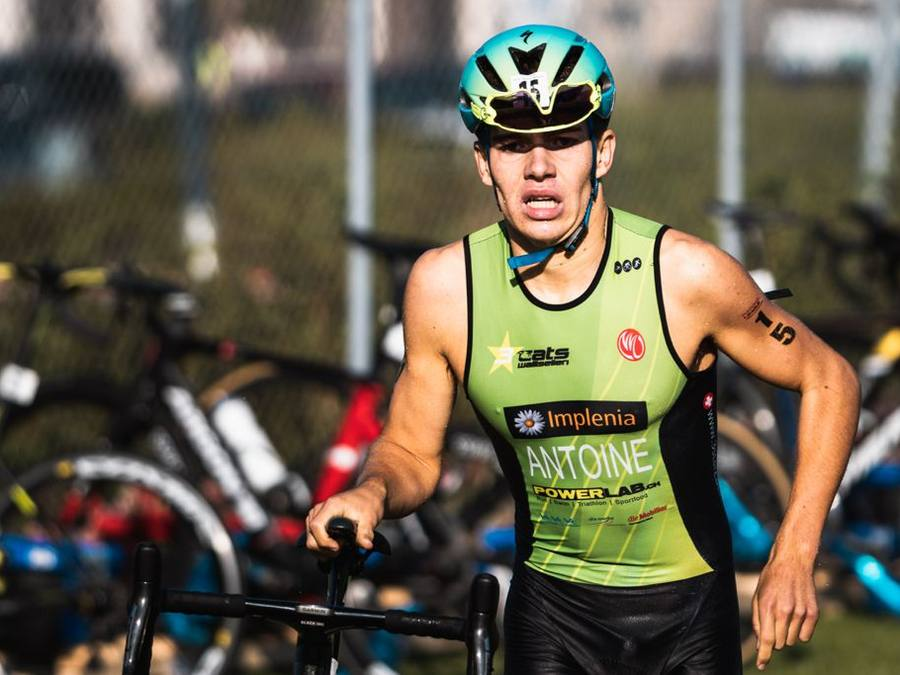

01
2005 – 2025
Drei Disziplinen, ein Weg
Jahrgang 2005, gross geworden mit Schwimmen, Rad und Laufen — und früh war klar: Das soll mehr sein als ein Hobby.
An der UNITED School of Sports verbindet Antoine Ausbildung und Spitzensport, 2025 schliesst er ab. Im Nachwuchs holt er mehrere Schweizermeistertitel — und zeigt es auch international: Top 20 an der Junioren-WM 2023 in Hamburg, Rang 12 an der Junioren-WM 2024 in Torremolinos.
55 Starts. 6 Podeste. 2 Siege. Und das ist erst der Anfang.
Jahrgang 2005 · 21 Jahre
Nationalität: Schweiz
Sprint- & Kurzdistanz
Team Koach
World Triathlon ID 158227
Swiss Triathlon Elite-Kader C


Aus den Junior-Jahren: erste Rennen, erste Siege.